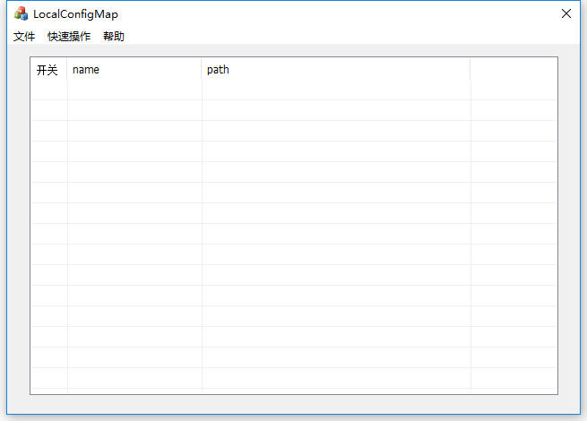
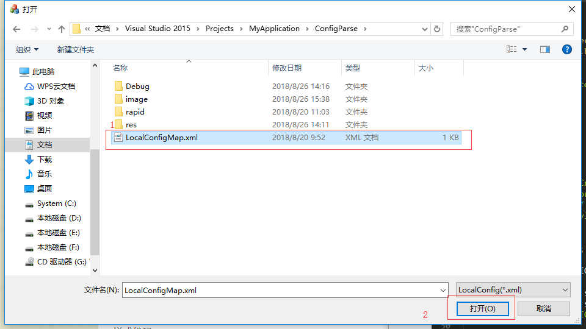
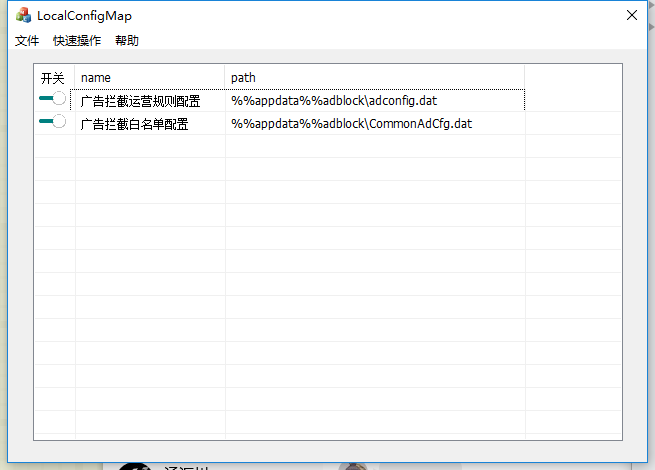
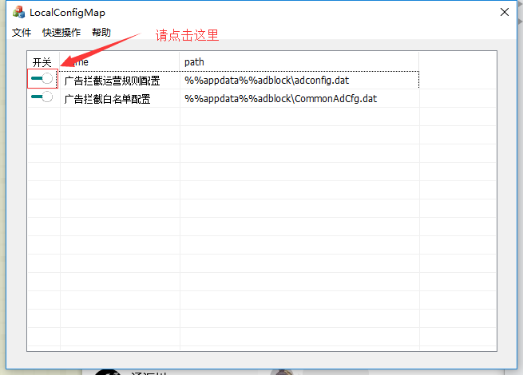
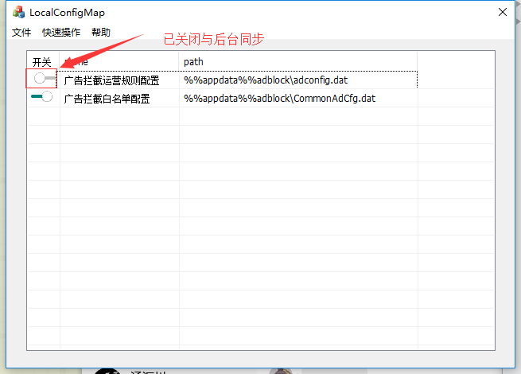
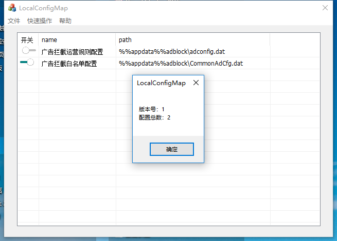
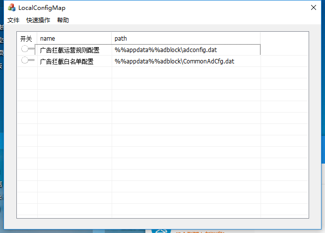
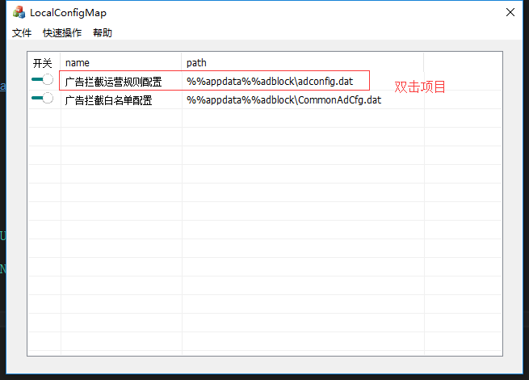
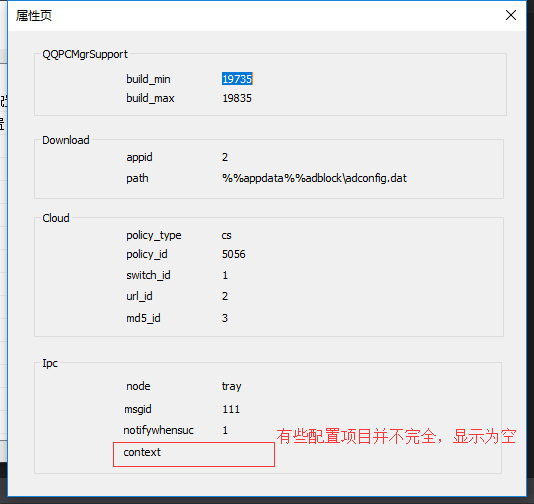

双击图标打开文件，如下图所示
点击菜单:文件->导入xml文件
如果在exe同级目录下存在LocalConfigMap.xml文件，会自动为您导入
如果在exe同级目录下不存在LocalConfigMap.xml文件，需要您手动选择，如下图所示
如文件没有错误，则打开后如下图所示
“开关”表示是否与后台进行同步，开关为开时，表示与后台进行同步，开关为关闭状态时，表示不与后台进行同步，在注册表中没有相关信息的时候，默认情况为开，即与后台进行同步
点击表格第一列开关图标，来改变开关状态
点击完后的开关状态
在此，你已经掌握了基本操作，那么尝试一点更加高级的吧
点击菜单:文件->查看文件信息
可以得到xml文件的版本信息，以及xml文件中配置总数
是不是嫌弃一个一个点击关闭太繁琐，来试试这个功能吧
点击菜单:快速操作->全部关闭开关
全部打开开关也是一样的操作哦~
双击对应项目，即可以获取对应配置的具体信息
 如果在后续过程中，你可以在菜单:帮助->查看帮助 再次打开这个网页哦
你也可以点击帮助->联系我们 来直接联系我哦
如果有任何问题，请联系
annxiong@tencent.com